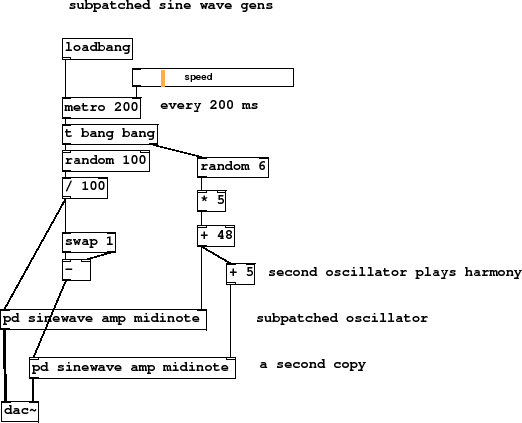

Subsections
Figure 6 summary
- Subpatched oscillator
- inlet boxes connect to outside
- every 200 ms
- reusable code inside
- second oscillator plays harmony
- audio rate output
- subpatched oscillator
- a second copy
In this final example we have copied the oscillator subpatch and changed
the parameters of the composition a bit to get a more pleasing interval
and scale. Multiplying the midi note by a small integer sets the scale
interval, and adding to it provides a fixed offset. This way we have a scale
of six notes, five semitones apart starting at C3 with the second part playing
five semitones higher than the first. The variables that Puredata sees inside
a subpatch are the same as those in the main patch, in programming words a subpatch
does not provide scope. This means that some patches, especially those that use
tables, cannot be subpatched to make them easily copied. For this we use
abstractions instead, which will be introduced in the next tutorial.
Figure 6:
two-oscillators
|

|
F-two-oscillators-play.pd
F-two-oscillators-play.ogg
Andy Farnell
http://obiwannabe.co.uk/